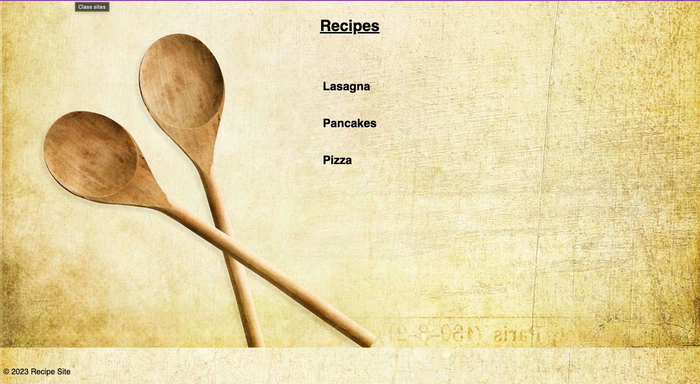
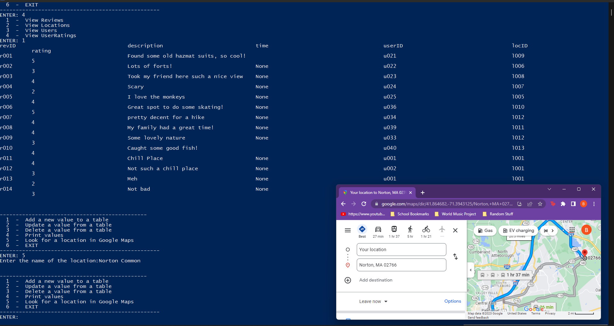
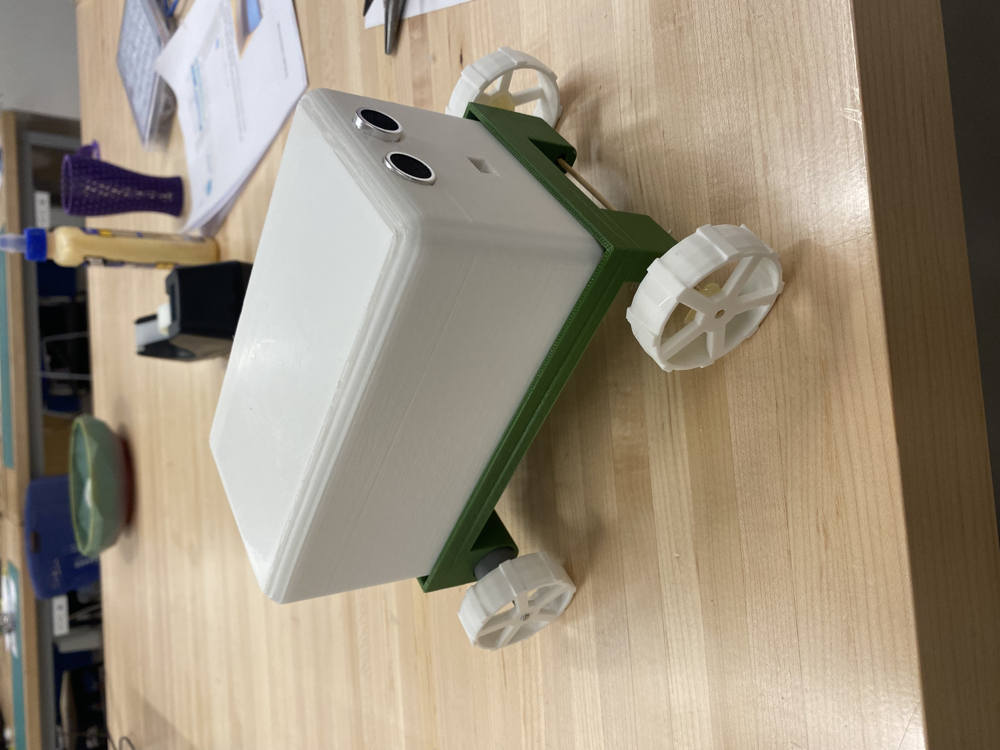
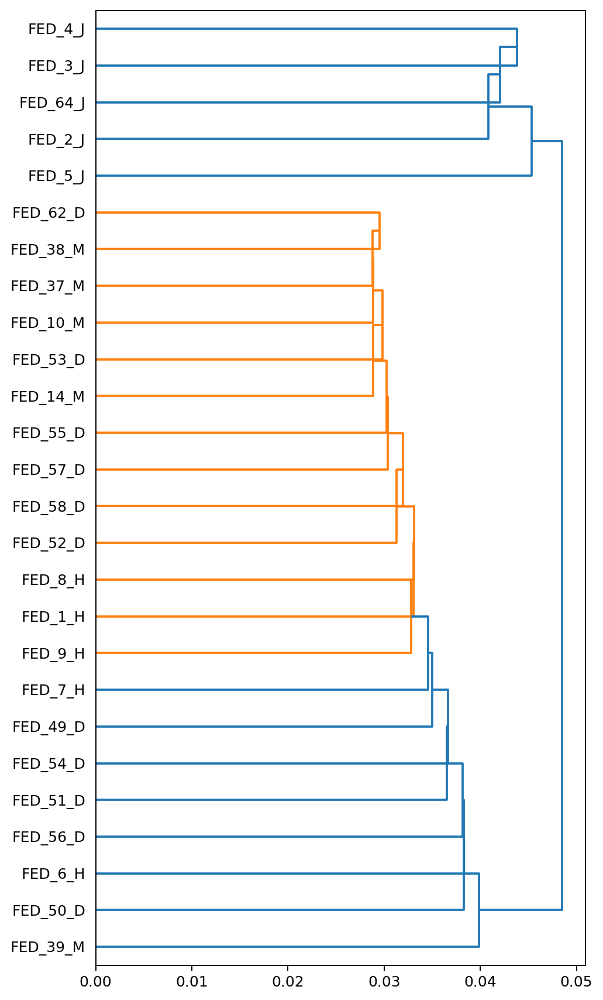

Recipe Site
A toy website I made for various food recipes to practice my HTML and CSS. Occasionally receives updates to add new recipes.
View ProjectLocation Database
Allows users to input outdoor locations that they find worth sharing, mostly nature spots. This application is back-ended by a database using SQLite to store data and has a front-end using python that acts as a user friendly interface
View ProjectApplication Controlled Model Car
A group project using Java and XML to design an application to control a model car using web sockets for the connection. Multiple digital fabrication techniques were also used to create the car itself
View ProjectFederalist Papers Authorship Attribution
A machine learning project using clustering and classification techniques to find the most likely author of the 12 disputed Federalist Papers.
View Project